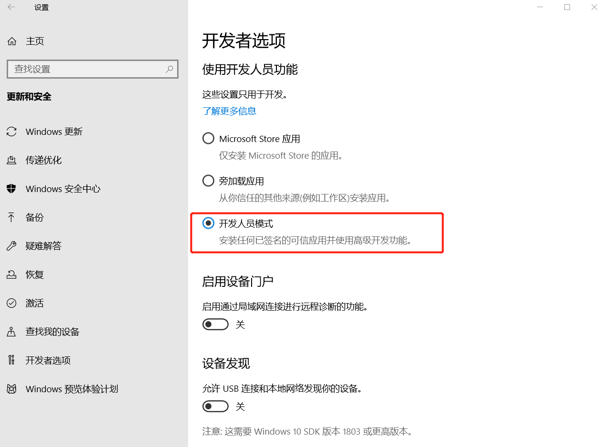
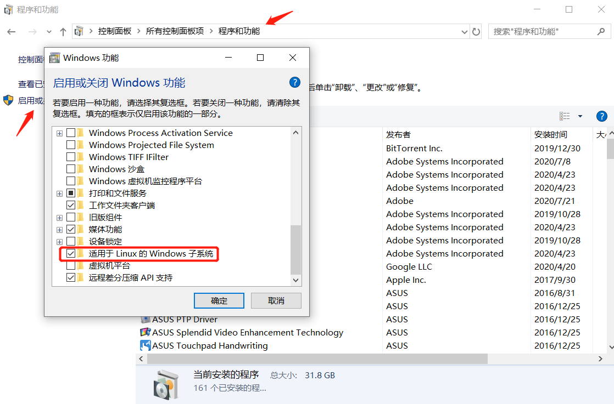
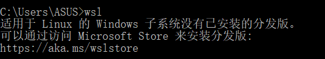
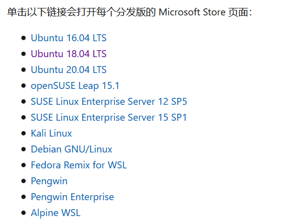
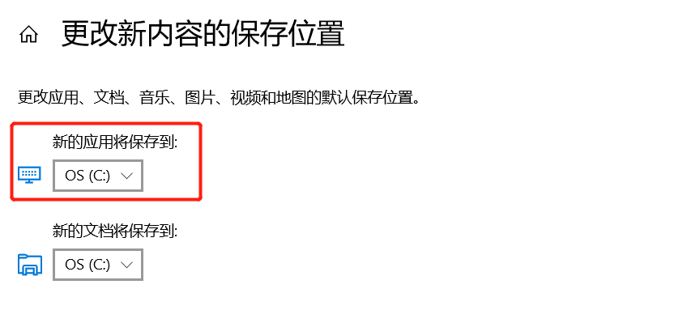
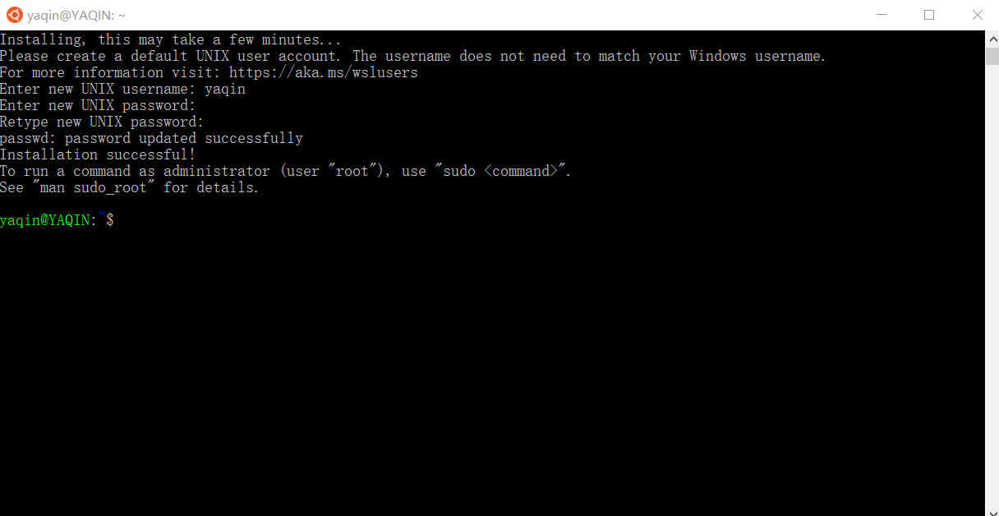

最近部署好的项目在调试时出现了如下报错：
java.io.IOException: Cannot run program "wsl.exe": CreateProcess error=2, 系统找不到指定的文件。
at java.lang.ProcessBuilder.start(ProcessBuilder.java:1048)
at com.netflix.eureka.resources.ApplicationResource.callContract(ApplicationResource.java:257)
at sun.reflect.NativeMethodAccessorImpl.invoke0(Native Method)
at sun.reflect.NativeMethodAccessorImpl.invoke(NativeMethodAccessorImpl.java:62)
at sun.reflect.DelegatingMethodAccessorImpl.invoke(DelegatingMethodAccessorImpl.java:43)
at java.lang.reflect.Method.invoke(Method.java:498)
...
阅读了一下源码，发现项目后端需要 Windows 用一个叫做 "wsl.exe" 的文件执行一条 Linux 语句，而 wsl 的全名为 Windows Subsystem for Linux，是微软开发的Linux兼容内核接口（来自百度百科），其实说白了就是可以在Windows环境下运行Bash shell的程序！而且与完整的虚拟机设置相比，对计算机资源的压力较小
听起来简直像是程序猿必备的工具，我竟然一直不知道太惭愧了，既然 wsl 这么有用，那我们就来安装一下它吧
# 1. 打开开发者模式
在确保 Windows 为 64 位后，设置 -> 更新和安全 -> 开发者选项，选中开发者模式，等待系统安装新功能（印象中需要重启）

# 2. 控制面板
打开控制面板 -> 程序和功能 -> 启用 Windows 应用 -> 勾选 "适用于 Linux" 的 Windows 子系统（英文名 Windows subsystem for Linux）

确定后重启计算机，重启后 cmd 唤出命令行，输入 wsl 会得到如下结果，说明我们的安装已经成功了一半了，接下来需要安装这个叫做 "分发版" 的东西

# 3. 安装分发版
打开 Microsoft Store，安装分发版，官方也有链接可以打开每个分发版的 Microsoft Store 页面，这里按自己的需求下载合适的版本即可，我下的是 Ubuntu 18

注意 wsl 只能在系统驱动器（通常是 C 盘）中运行，如果之前更改过默认保存路径记得改回来：设置 -> 系统 -> 存储 -> 更改新内容的保存位置

# 4. 配置 Linux 分发版
下载完成后，开启应用，按照控制台提示（需要等待一段时间），为新的 Linux 分发版创建新帐户和密码

至此子系统的安装配置就全部完成啦，建议一开始使用先输入命令： sudo apt update && sudo apt upgrade 更新下更新包目录
最后报错也解决啦！开心！！！
# 参考链接
https://www.jianshu.com/p/7b348828644e
https://docs.microsoft.com/zh-cn/windows/wsl/install-win10#install-the-windows-subsystem-for-linux
安装若还出现了其他问题，可以去官网查询原因：https://docs.microsoft.com/zh-cn/windows/wsl/troubleshooting#common-issues